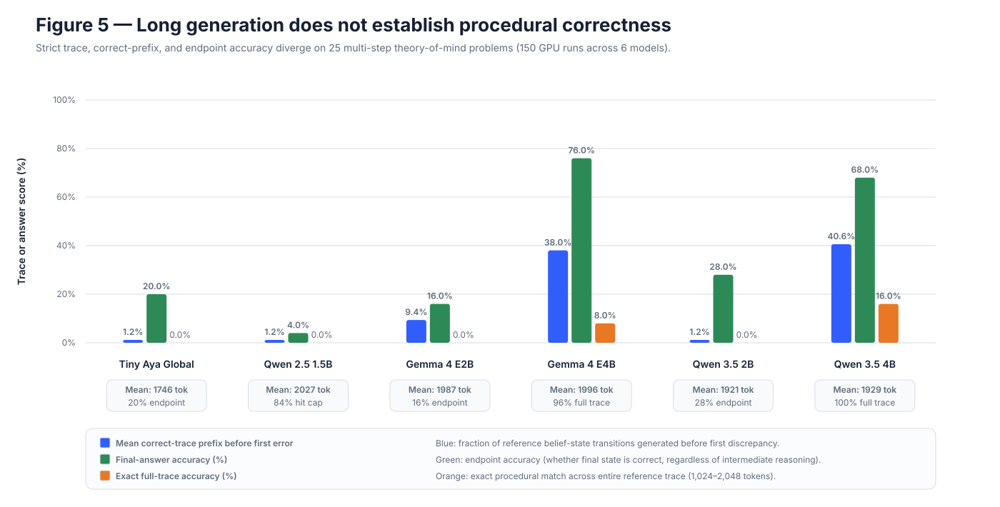

Hypothesis
Output length and final-answer accuracy will overestimate procedural reliability.
LongProc · methodological control
Deterministic Theory-of-Mind belief-state traces make every intermediate state checkable, exposing the gap between verbose output, a correct endpoint, and a fully correct procedure.
Result in one line. Across the frozen six-model cohort, models can emit roughly two thousand tokens and reach the correct final answer while making an early trace error; endpoint accuracy materially overstates procedural correctness.
Final-answer scoring ignores the path. LongProc provides an exact reference sequence, enabling first-error prefix accuracy and full-trace exact match.
Output length and final-answer accuracy will overestimate procedural reliability.
Full-trace accuracy, correct-prefix accuracy, and endpoint accuracy should align if verbose output faithfully represents the procedure.
Every generated belief-state line must match the deterministic reference.
Fraction of the reference trace completed before the first error.
Endpoint-only score retained to quantify the evaluation gap.
Full trace emitted, token-cap hits, output length, latency, and throughput.
| Model | Strict trace | Mean correct prefix | Final answer | Mean output |
|---|---|---|---|---|
| Tiny Aya | 0% | 1.2% | 20% | 1,746 |
| Qwen 2.5 1.5B | 0% | 1.2% | 4% | 2,027 |
| Gemma E2B | 0% | 9.4% | 16% | 1,987 |
| Gemma E4B | 8% | 38.0% | 76% | 1,996 |
| Qwen 3.5 2B | 0% | 1.2% | 28% | 1,921 |
| Qwen 3.5 4B | 16% | 40.6% | 68% | 1,929 |
versus 8% full-trace exact
best full-trace score
despite 1.2% mean prefix

Qwen 2.5 consumes the budget without maintaining state; Tiny Aya and Qwen 3.5 2B also lose the trace early. Gemma E4B and Qwen 3.5 4B are strongest, yet their endpoint scores still exceed strict trace accuracy by 68 and 52 points.
Neither token count nor final-answer accuracy establishes that an extended generated procedure is internally correct.
The 25-item public subset is sufficient for a strong directional comparison but not a precise absolute benchmark. The result does not say long outputs are always harmful; it says they must be evaluated against the process they claim to execute.
FINDINGS_LONGPROC_GPU.mdresults/processed/longproc_gpu_summary.jsonconfigs/longproc/tom_tracking_2k_tiny_aya.yamlresults/raw/longproc_tom_tracking_2k_tiny_aya/GPU_PROVENANCE.md